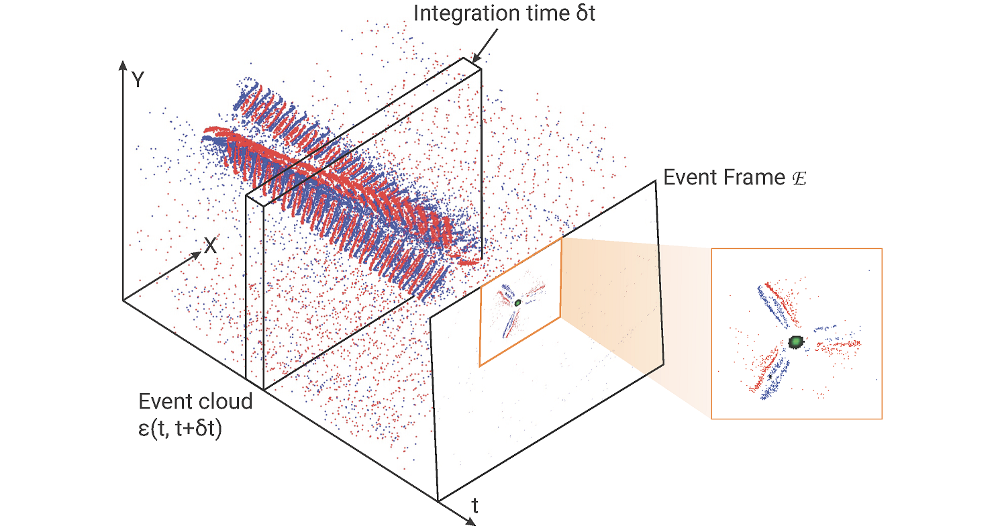
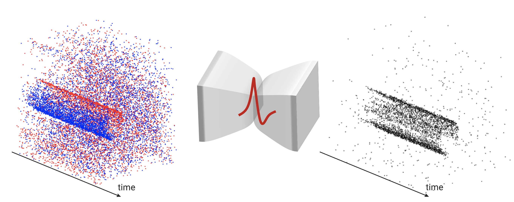
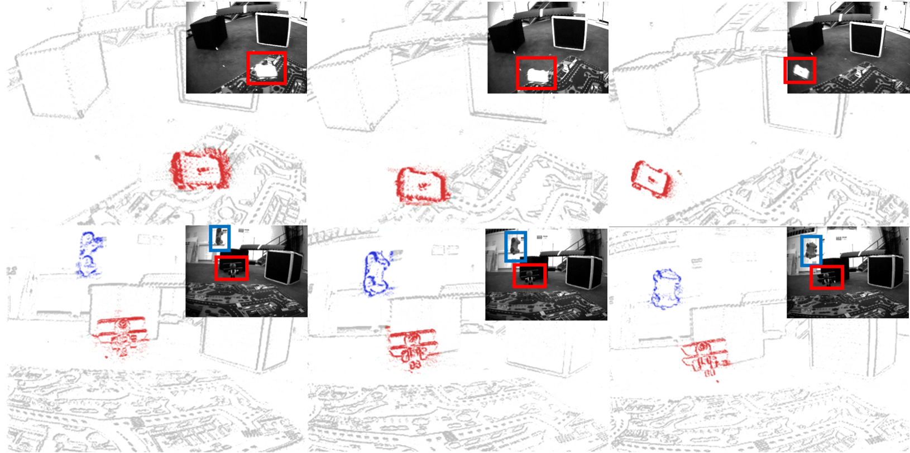

EVPropNet
The rapid rise of accessibility of unmanned aerial vehicles or drones pose a threat to general security and confidentiality. Most of the commercially available or custom-built drones are multi-rotors and are comprised of multiple propellers. Since these propellers rotate at a high-speed, they are generally the fastest moving parts of an image and cannot be directly "seen" by a classical camera without severe motion blur. We utilize a class of sensors that are particularly suitable for such scenarios called event cameras, which have a high temporal resolution, low-latency, and high dynamic range.
In this paper, we model the geometry of a propeller and use it to generate simulated events which are used to train a deep neural network called EVPropNet to detect propellers from the data of an event camera. EVPropNet directly transfers to the real world without any fine-tuning or retraining. We present two applications of our network: (a) tracking and following an unmarked drone and (b) landing on a near-hover drone. We successfully evaluate and demonstrate the proposed approach in many real-world experiments with different propeller shapes and sizes. Our network can detect propellers at a rate of 85.1% even when 60% of the propeller is occluded and can run at upto 35Hz on a 2W power budget. To our knowledge, this is the first deep learning-based solution for detecting propellers (to detect drones). Finally, our applications also show an impressive success rate of 92% and 90% for the tracking and landing tasks respectively.
References
RSS 2021
Nitin J. Sanket, Chahat Deep Singh, Chethan M. Parameshwara, Cornelia Fermuller, Guido C.H.E. de Croon, Yiannis Aloimonos, Robotics Science and Systems (RSS), 2021.

SpikeMS
Spiking Neural Networks (SNN) are the so-called third generation of neural networks which attempt to more closely match the functioning of the biological brain. They inherently encode temporal data, allowing for training with less energy usage and can be extremely energy efficient when coded on neuromorphic hardware. In addition, they are well suited for tasks involving event-based sensors, which match the event-based nature of the SNN. However, SNNs have not been as effectively applied to real-world, large-scale tasks as standard Artificial Neural Networks (ANNs) due to the algorithmic and training complexity. To exacerbate the situation further, the input representation is unconventional and requires careful analysis and deep understanding. In this paper, we propose SpikeMS, the first deep encoder-decoder SNN architecture for the real-world large-scale problem of motion segmentation using the event-based DVS camera as input. To accomplish this, we introduce a novel spatio-temporal loss formulation that includes both spike counts and classification labels in conjunction with the use of new techniques for SNN backpropagation. In addition, we show that SpikeMS is capable of incremental predictions, or predictions from smaller amounts of test data than it is trained on. This is invaluable for providing outputs even with partial input data for low-latency applications and those requiring fast predictions. We evaluated SpikeMS on challenging synthetic and real-world sequences from EV-IMO, EED and MOD datasets and achieving results on a par with a comparable ANN method, but using potentially 50 times less power.
References
IROS 2021
Chethan M. Parameshwara*, Simin Li*, Cornelia Fermuller, Nitin J. Sanket, Matthew S. Evanusa, Yiannis Aloimonos, IEEE International Conference on Intelligent Robots and Systems (IROS), 2021.
* Equal Contribution

0-MMS
Segmentation of moving objects in dynamic scenes is a key process in scene understanding for navigation tasks. Classical cameras suffer from motion blur in such scenarios rendering them effete. On the contrary, event cameras, because of their high temporal resolution and lack of motion blur, are tailor-made for this problem. We present an approach for monocular multi-motion segmentation, which combines bottom-up feature tracking and top-down motion compensation into a unified pipeline, which is the first of its kind to our knowledge. Using the events within a time-interval, our method segments the scene into multiple motions by splitting and merging. We further speed up our method by using the concept of motion propagation and cluster keyslices. The approach was successfully evaluated on both challenging real-world and synthetic scenarios from the EV-IMO, EED, and MOD datasets and outperformed the state-of-the-art detection rate by 12%, achieving a new state-of-the-art average detection rate of 81.06%, 94.2% and 82.35% on the aforementioned datasets. To enable further research and systematic evaluation of multi-motion segmentation, we present and open-source a new dataset/benchmark called MOD++, which includes challenging sequences and extensive data stratification in-terms of camera and object motion, velocity magnitudes, direction, and rotational speeds.
References
ICRA 2021
Chethan M. Parameshwara, Nitin J. Sanket, Chahat Deep Singh, Cornelia Fermuller, Yiannis Aloimonos, IEEE International Conference on Robotics and Automation (ICRA), 2021.

2020
EVDodgeNet
Dynamic obstacle avoidance on quadrotors requires low latency. A class of sensors that are particularly suitable for such scenarios are event cameras. In this paper, we present a deep learning based solution for dodging multiple dynamic obstacles on a quadrotor with a single event camera and onboard computation. Our approach uses a series of shallow neural networks for estimating both the ego-motion and the motion of independently moving objects. The networks are trained in simulation and directly transfer to the real world without any fine-tuning or retraining. We successfully evaluate and demonstrate the proposed approach in many real-world experiments with obstacles of different shapes and sizes, achieving an overall success rate of 70% including objects of unknown shape and a low light testing scenario. To our knowledge, this is the first deep learning based solution to the problem of dynamic obstacle avoidance using event cameras on a quadrotor. Finally, we also extend our work to the pursuit task by merely reversing the control policy, proving that our navigation stack can cater to different scenarios.
References
ICRA 2020
Nitin J. Sanket*, Chethan M. Parameshwara*, Chahat Deep Singh, Ashwin V. Kuruttukulam, Cornelia Fermuller, Davide Scaramuzza, Yiannis Aloimonos, IEEE International Confernce on Robotics and Automation, Paris, 2020.
* Equal Contribution


 Perception and Autonomous Robotics Group
Perception and Autonomous Robotics Group